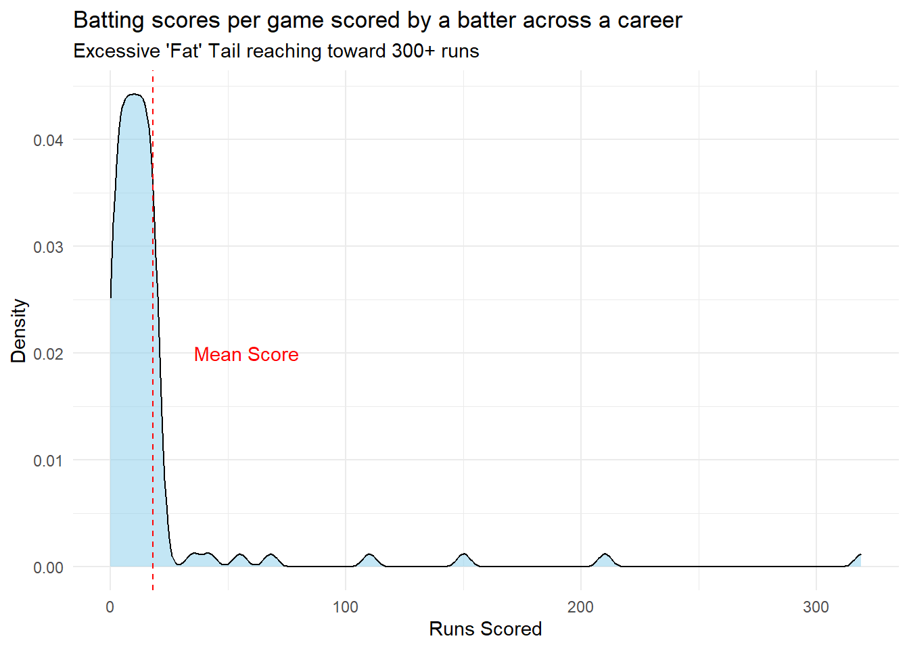

Variable | Mean | Median | SD | Variance | Skew | Excess_Kurt |
|---|---|---|---|---|---|---|
Variable 1 | 50.0 | 50.0 | 10.0 | 100.6 | 0.0 | 0.0 |
Variable 2 | 50.0 | 50.0 | 12.9 | 165.8 | -0.1 | 6.0 |
Variable 3 | 50.0 | 50.1 | 17.3 | 301.0 | 0.0 | -1.2 |
Variable 4 | 38.0 | 36.8 | 6.1 | 37.2 | 1.0 | 0.9 |
Variable 5 | 62.1 | 63.3 | 6.1 | 36.9 | -1.0 | 0.9 |
Skewness and Kurtosis
Objectives
In this tutorial we will
- Analyze how to understand Skewness and Kurtosis
Introduction
In the last tutorial we talked about measures of centrality and dispersion. Often we are tempted to stop at that. However to truely understand our continuous variable we also have to understand the skewness and kurtosis of our dataset. A dataset in which a mean = median may not always be normally distributed unless we can verify the skew and kurtosis of the data. So let us try to understand what this measures mean
Skew
The skew of a distribution is a measure of its assymetry. Variables that have a few extreme values are skewed distributions.
If there are a few extremely large values the data is called right skewed. The mean will shift to a larger value on account of the few large values. Visually on a histogram this looks like the histogram stretching to the right (hence the name “Right Skew). A quick way to suspect a right skewed distribution is when the mean is larger than the median.
Conversely if there a few extremely small values. The data is left skewed. The mean will be less than the median.
Mathematically skew is represented as either a positive or negative number. Positive numbers indicates a left skew and negative numbers indicate a left skew. There is no universal standard while interpreting the strength of the skew. However values from 0 to plus or minus 0.5 are not necessarily considered skew. Less than -0.5 or more than +0.5 are moderate skewed. Less than -1 or more than +1 are considered extremely skewed.
Example
Consider the above table. Focus on just the mean and the median. By just looking at these two values, we can judge skew. But its hard to quantify it mathematically and decide how much skew is present but its easy to spot a positive or negative skew by simply looking at the difference between the mean and median. This should alert us to the possibility of a skew in case we do not routinely look for it.
Variables 1 to 3 all have a similar mean. A common mistake is to now assume that all 3 of them are normally distributed. Afterall mean = median is a property of a normal distribution. However if you look at the table again you will notice that Variable 2 has a Kurtosis of 6 and Variable 3 has a Kurtosis of -1.2. Variable 1 has a Kurtosis of 0.
To understand this let us now actually plot the distributions and see.

Kurtosis
Look at the variables titled High Kurtosis and Low Kurtosis.
Kurtosis refers to how much data is present in the “tails” of the data. For the next part of the passage on how much of the data is present outside the 2 red lines in the figure that signify the 2 * SD mark.
In a normal distribution 95% of the values lie between 2 standard deviation from the mean. 2.5 % lie below -2SD and 2.5% lie above +2SD. (A total of 5% of values lie in the “tails”).
However in distributions with high kurtosis you will find a high peak in the centre and more than 5% of values lying in the tails. This is known as the “heavy tails”. These distributions are referred to as “leptokutotic” distributions.
In distributions with low kurtosis you find an almost flat distribution with all the values getting over even before reaching the 2SD. This is called the platykurtotic distribution. These distributions have “thin tails”.
In summary - skewness gives you information on the asymettry of the data and kurtosis gives you information on how much information is present in the tails of the data.
Why this becomes important is because a skewed or kurtotic distribution needs to be handled differently in analysis.
In a flat platykurtotic distribution for example , even though there is technically a mean you dont really see much clustering around the mean. In fact the example that we see in our figure is that of a flat distribution that has very different properties from that of a normal distribution.
In a platykurtotic distribution , most values are tightly clustered around each other. But extreme events can happen far more frequently than a normal curve would predict. These are often called “Black Swan” events.
Example
To understand a bit better let us use a sporting example. In cricket , a batter who has a career average of 25 would consistently score between 25 and 45. In this scenario a normal curve would predict a score of 100 or 0 to be a very rare event. However we know that this is not how it works out in the real world. 100s and 0s do happen.
# Simulated career scores: High frequency of low scores + rare massive scores
scores <- c(rep(0:20, 5), 35, 42, 55, 68, 110, 150, 210, 319)
# Calculate Kurtosis
# A normal distribution has a kurtosis of 3.
# Anything significantly higher is Leptokurtic.
kurt_val <- kurtosis(scores)
cat("The Kurtosis of these scores is:", round(kurt_val, 2))The Kurtosis of these scores is: 35.82# Plotting the distribution
ggplot(data.frame(scores), aes(x = scores)) +
geom_density(fill = "skyblue", alpha = 0.5) +
geom_vline(aes(xintercept = mean(scores)), color = "red", linetype = "dashed") +
annotate("text", x = mean(scores) + 40, y = 0.02, label = "Mean Score", color = "red") +
labs(title = "Batting scores per game scored by a batter across a career",
subtitle = paste("Excessive 'Fat' Tail reaching toward 300+ runs"),
x = "Runs Scored", y = "Density") +
theme_minimal()
This is an example of a variable that is both skewed and leptokurtotic. This does happen in real life. Unlike the neat example given in the initial set of figures you know have a combination of skew and kurtosis all coming together.